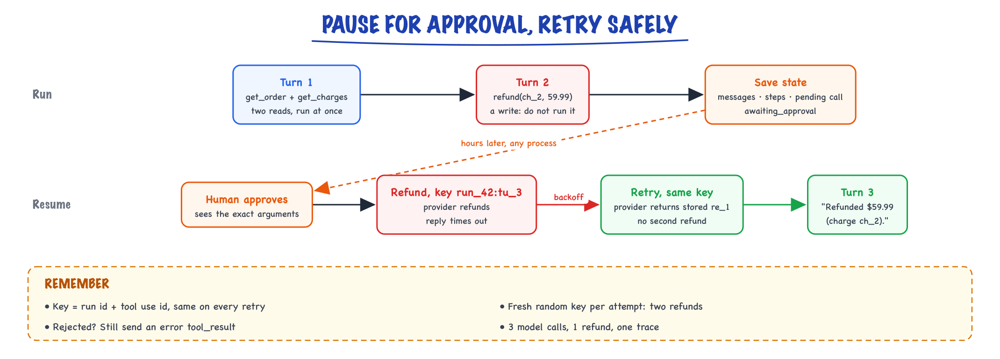

The agent loop // Tools & agents
The loop in depth and in code: budgets, errors, human approval, reliability, safety, and how to evaluate an agent.
01 — At a glance
Ship agents safely: human-in-the-loop approvals, guardrails, tracing, cost caps, graceful degradation. Production agents are bounded loops, not autonomous AGI.

Production agent stack: API gateway, agent orchestrator with termination controller, HITL approval queue, tool sandbox, guardrails filter, observability pipeline.

Run a realistic task suite several times, keep full traces, then score the end state, the trajectory, consistency and safety.
02 — New words
| Word | Meaning |
|---|---|
| Turn | One model call and the message it produces. An agent run is a sequence of turns separated by tool executions. |
| Stop reason | A field on every model response saying why generation ended: it finished (end_turn), it wants tools run (tool_use), or it hit the output limit (max_tokens). |
| Tool use block | The part of a model response that requests one tool call: a unique id, a tool name and JSON arguments. |
| Tool result block | What your code sends back: the result (or error) for one tool use, tagged with that tool use's id. |
| Transient error | A failure that may succeed if simply retried: a timeout, a rate limit, a dropped connection. |
| Idempotency key | A unique string sent with a write so the receiving system performs it at most once, however many times the request arrives. |
| Exponential backoff | Waiting longer between each retry (for example 0.5 s, 1 s, 2 s), usually with random jitter, so retries do not pile onto a struggling service. |
| Budget | A hard limit the runtime enforces on a run: steps, tokens, money or wall-clock time. |
| Human-in-the-loop (HITL) | Pausing the run before a risky action until a person approves or rejects it. |
| Checkpoint | A saved copy of the run's state (messages, step count, pending action) from which it can be resumed. |
| Trace | A structured log of one run: every model call and tool call with inputs, outputs, tokens and timings. |
| pass@k / pass^k | The chance that at least one of \(k\) runs succeeds, versus the chance that all \(k\) runs succeed. |
| Budget / max_steps | Hard cap on steps/tokens/time/spend; prevents runaway loops. |
| Durable execution | Checkpointed long-running jobs that resume after crashes (Temporal/LangGraph). |
The lesson
03 — The question
What an agent is established the definition: the model decides the next step. This lesson is about the code that makes that possible, the loop. It is short (the core fits in fifteen lines), but almost every production agent failure lives in the parts tutorials skip: what happens when a tool times out, when the model's output is cut off, when an action needs a human, when the process crashes halfway, and how you know the agent works at all.
The questions you will be asked:
- Walk me through the agent loop. What exactly goes back and forth with the model?
- How do you handle tool errors and retries without the agent doing something twice?
- How do you stop an agent from running forever or spending too much?
- How do you add human approval, and how do you evaluate an agent?
The running example. The same order-support agent: a customer writes "I was charged twice for ORD-482913." The agent has two read tools, get_order and get_charges, and one write tool, refund. Two complications make it realistic. Refunds need a human's approval. And the payments API, on the first refund attempt, performs the refund but then times out before replying. A naive loop will refund the customer twice, which would be a fitting way to resolve a duplicate-charge complaint. We will build a loop that does not.
04 — Step 1: the loop, and the conversation it maintains
A model API takes a list of messages and returns one new message. The loop is the code that keeps calling it:
messages = [user goal]
repeat:
response = model(system, tools, messages)
messages.append(response) # role: assistant
if response.stop_reason == "end_turn": return the text
results = run every tool_use block in response
messages.append(results) # role: user, one tool_result per tool_use
until a budget is hit
Run once on our request, the message list grows like this:
| # | Role | Content |
|---|---|---|
| 0 | user | "I was charged twice for ORD-482913." |
| 1 | assistant | tool_use tu_1 get_order; tool_use tu_2 get_charges |
| 2 | user | tool_result for tu_1 (total $59.99); tool_result for tu_2 (two charges) |
| 3 | assistant | text "Two identical charges; refunding the second."; tool_use tu_3 refund(ch_2, 59.99) |
| 4 | user | tool_result for tu_3 (refund re_1) |
| 5 | assistant | text "Refunded $59.99 (charge ch_2)." stop_reason end_turn |
Four facts about this structure matter in practice:
- Tool results are sent with the user role, though no person typed them. The protocol has only two speakers, so everything from the outside world arrives as "user".
- Every tool use must get a result, matched by id, in the very next message. If you skip one (because it was not approved, or it crashed), the API rejects the next call. A rejected or failed tool still gets a result: an error message.
- One response can request several tools (message 1 asks for two). They are independent reads, so the runtime can run them concurrently and return both results in one message. That saves a whole turn.
- The model is stateless. Each call re-sends the whole list. The list is the agent's memory of this run.
Message formats differ slightly between providers (OpenAI puts calls in a tool_calls field and results in messages with role tool), but the shape is the same everywhere. Tool calling covers the wire format in detail.
05 — Step 2: every stop reason needs a branch
The loop's exit test is the stop reason, and a robust loop handles every value, not only the happy two. The names below are the Anthropic Messages API's; OpenAI's equivalents are finish_reason values tool_calls, stop, length and content_filter:
| Stop reason | Meaning | What the loop does |
|---|---|---|
tool_use | The model wants tools run | Execute them, append results, continue |
end_turn | The model considers itself done | Return the final text (optionally verify it first) |
max_tokens | Output hit the limit you set | Do not execute anything from this turn: a tool call's JSON may be cut off. Retry with a higher limit, or stop with an error |
stop_sequence | Output hit a stop string you supplied | Treat like end_turn (or like your own protocol says) |
pause_turn | A long-running server-side tool (such as provider-hosted web search) was paused mid-turn | Send the response back as-is so the model continues; it is not a final answer |
refusal or a content filter | The model or a safety layer declined | Stop and return a safe message or escalate; do not loop on it |
The max_tokens case is the one people miss. A model that is writing a long tool argument (a document, a SQL query) can be cut off halfway; parsing the truncated JSON either fails or, worse, succeeds on a shorter value. Treat that turn as unusable.
06 — Step 3: executing a tool safely
Between "the model asked for refund(ch_2, 59.99)" and "the refund API is called" sits code that the model never sees, and it is where most of the safety lives. For each tool use block, the runtime:
- Checks the tool exists and the caller may use it. The model can name a tool that does not exist or one this user must not access. Permission is decided by your code from the authenticated user, never from anything in the prompt.
- Validates the arguments against the tool's JSON schema: required fields present, types right, enums respected, amounts in range. A missing
charge_idis returned to the model as an error it can fix. - Applies policy: is a refund of $59.99 allowed without approval? (In our shop, no: every refund needs a human.)
- Runs the function with a timeout, so one hung API does not hang the agent.
- Shapes the result: serialise it, strip fields the model does not need, and cap its size.
The size cap deserves a number. A tool that returns a 40,000-token log dump is not paid for once: the result stays in the message list and is re-sent on every later turn. Five more turns at an illustrative $3 per million input tokens cost \(40{,}000 \times 5 \times 3/10^6 = \$0.60\), for one careless tool, on one run. Return a summary or the first N rows and a note saying how to get more.
07 — Step 4: errors are observations, sorted into three kinds
When a tool fails, the loop has three options, and the right one depends on the kind of failure:
| Kind | Examples | Who handles it |
|---|---|---|
| Transient | Timeout, HTTP 429 or 503, connection reset | The runtime retries with backoff. The model never sees it unless retries run out. |
| Model-correctable | Unknown order id, invalid argument, "date must be ISO format" | Returned to the model as a tool result marked as an error, with a message that says how to fix it. |
| Fatal | Permission denied, policy violation, budget exhausted | The runtime stops the run (or tells the model plainly that the action is impossible and must not be retried). |
The middle row is what makes agents worth having. The error message is an observation, and a good one turns a failure into a next step: "ORDER_NOT_FOUND: no order ORD-48291. Order ids have 6 digits; ask the customer to confirm." leads the model straight to asking. A bare "Error 404" leads it to guess.
Retries in the runtime are cheap insurance. If a call fails transiently 10% of the time, independently, then with up to three attempts the chance all three fail is \(0.1^3 = 0.001\): from one failure in ten calls to one in a thousand. Waits of 0.5 s, 1 s, 2 s (doubling, plus random jitter so many clients do not retry in lock-step) give a struggling service room to recover. Retries do not help with model-correctable or fatal errors: retrying "order not found" three times gets "order not found" three times.
08 — Step 5: the retry that refunds twice, and idempotency
Now the trap in our example. The runtime calls the payments API to refund ch_2. The provider performs the refund, then the response is lost and the call raises a timeout. The runtime, following Step 4, retries. Without protection, the provider sees a second, perfectly valid refund request and performs it again. The customer, who was charged twice, is now refunded twice.
The root problem is that a timeout does not tell you whether the action happened. For reads that does not matter: reading twice is harmless. For writes it is the central problem, and the standard fix comes from payments engineering: an idempotency key. The caller sends a unique key with the write; the receiving system stores the key with the result and, if the same key arrives again, returns the stored result instead of acting again.
The key must be stable across retries of the same intended action and different for different actions. A good choice in an agent is the run id plus the tool use id (run_42:tu_3): every retry of that one tool call carries the same key, and a genuinely new refund requested later in the run gets a new tool use id. Do not generate a fresh random key per attempt; that defeats the purpose. If the downstream API has no idempotency support, the tool wrapper must provide it: record the intended action in your own database before calling, and check the record before acting.
The model can also repeat a write. Even with perfect runtime retries, the model may, two turns later, decide to call refund again because it is unsure the first one worked. Tool-use-id keys do not stop that, because it is a new tool use. Business-level checks do: the refund tool should refuse a second refund on the same charge and say so in its result.
09 — Step 6: budgets, and why the loop must not trust the model to stop
Models sometimes never decide they are done: they repeat a failing call with the same arguments, alternate between two tools, or keep "double-checking". The runtime enforces limits on every run, checked at the top of every iteration:
- Steps: the number of model calls. The simplest and most important.
- Tokens and money: because input grows each turn, cost per step rises.
- Wall-clock time: for user-facing runs, the latency promise.
- Repetition: the same tool with the same arguments three times in a row is almost always a loop.
Setting the step limit from a money budget is a worked calculation. With the cost model from the previous lesson (1,550 input tokens on the first call, each turn adding about 370 tokens, 120 output tokens per turn, illustrative prices of $3 and $15 per million), the cumulative cost of a run is:
| Model calls | 4 | 8 | 9 | 10 | 12 | 16 | 20 |
|---|---|---|---|---|---|---|---|
| Cumulative cost | $0.032 | $0.083 | $0.098 | $0.114 | $0.151 | $0.236 | $0.340 |
A $0.10 per-run budget therefore allows 9 calls. Doubling the steps from 10 to 20 roughly triples the cost, because input grows with every turn. In practice, set the step limit from the distribution of successful runs: if 99% of successful runs in your evaluation take 6 or fewer calls, a limit of 10 stops runaways without cutting off real work.
What happens at the limit matters as much as the limit. Do not raise an exception and lose the work. Return a structured outcome: what was found, what was not done, and an escalation to a human with the trace attached.
10 — Step 7: human approval means the loop must pause and resume
Classify every tool by risk before writing any approval code:
| Class | Example | Policy |
|---|---|---|
| Read | get_order, get_charges | Run automatically |
| Reversible write | Add an internal note, draft an email | Run automatically, log it |
| Irreversible or costly write | Refund, send email, delete, deploy | Require approval (or allow below a threshold, such as refunds under $20) |
The naive implementation blocks the loop while waiting for a human: input("approve?"), or a thread waiting on a queue. That fails in production because approvals take minutes or hours, servers restart, and you cannot hold thousands of threads open. The real implementation makes the loop resumable:
- When the model requests
refund, the runtime does not execute it. It saves the run's state (message list, step count, the pending tool use) to a database and returnsawaiting_approvalwith the proposed action. - A reviewer sees "Refund $59.99 on ch_2 for ORD-482913, reason: duplicate charge", with the evidence (the two charges).
- On approval, any process loads the state, executes the pending tool and appends its result. On rejection, it appends an error result such as "Rejected by a human reviewer. Do not retry; explain to the customer." Either way the tool use gets its result, and the loop continues.
Show the reviewer the exact arguments that will execute, not the model's prose description of them. A model can write "refund the duplicate $59.99" while the arguments say $599.90.
11 — Step 8: checkpoints, crashes and replays
The approval pause is a special case of a general need: an agent run is a long-lived, multi-step process, and the process running it can die at any point. Saving state after every step (a checkpoint) means a crash costs one step, not the run. On restart, load the latest checkpoint and continue.
Checkpointing creates the same hazard as retries: if the process died after calling the refund API but before saving the result, the resumed run will call it again. The idempotency key from Step 5 makes that replay safe, because the key is built from ids already in the checkpoint. This is why "durable execution" frameworks (and LangGraph's checkpointers, see LangGraph) insist that side-effecting steps be idempotent.
12 — Step 9: traces, so you can see what happened
An agent's behaviour is decided at runtime, so you cannot understand a failure by reading code; you have to read the trajectory. Record one trace per run with a span per model call and per tool call. For each model call: the model, the input and output token counts, the latency, the stop reason, and the full messages (with personal data redacted). For each tool call: name, arguments, result size, duration, error kind, retry count and idempotency key. Tag the run with user, tenant, prompt version and outcome.
From traces come the numbers that run an agent in production: success rate, steps per run, cost per run (and its long tail: alert on runs costing ten times the median, which are usually loops or oversized tool results), tool error rates and approval rates. See observability.
13 — Step 10: evaluating an agent
A single successful demo proves almost nothing, because runs are not deterministic. Evaluation needs a task set (say 50 realistic requests, including the awkward ones: wrong order id, three charges, a pending charge), each with a checkable definition of success, and several runs per task.
Check outcomes at three levels:
- End state: inspect the world, not the reply. After the duplicate-charge task, exactly one refund of $59.99 exists against
ch_2, and none againstch_1. A reply saying "refunded" while no refund exists is a failure; so is a correct reply with two refunds. - Trajectory: did it read the charges before refunding? Did it ask for approval? Did it stay within 6 steps? These catch an agent that gets the right answer by luck.
- Reply quality: is the message accurate and appropriate? Often scored by a model judge against a rubric (see evals).
Then report reliability properly. If one run succeeds with probability \(p\), two numbers describe \(k\) runs:
\[ \text{pass@}k = 1 - (1-p)^k \qquad\qquad \text{pass}^k = p^k \]pass@k (at least one of \(k\) succeeds) suits tasks where you can generate several attempts and pick a verified one. pass^k (all \(k\) succeed) is what a customer experiences: the agent has to work every time. With \(p = 0.8\): pass@3 = 0.992, which looks superb; pass^3 = 0.512, meaning only half the time would three customers in a row all be served correctly. Report pass^k for anything user-facing.
Finally, size the evaluation. With 50 tasks × 5 runs = 250 runs at \(p \approx 0.8\), the standard error is \(\sqrt{0.8 \times 0.2 / 250} \approx 0.025\), so a 95% interval is about ±5 points. Comparing two prompt versions, the difference has a standard error of about 0.036, so differences smaller than about 7 points are noise. With only 50 runs the interval is ±11 points: "my change improved success from 76% to 82%" means nothing at that size.
14 — A worked run, start to finish
Putting it together on the running example, with the loop below:
- Turn 1. The model requests
get_orderandget_chargesin one response. Both are reads: the runtime validates, runs them, and appends two results in one user message. - Turn 2. The model sees two $59.99 charges and requests
refund(ch_2, 59.99). It is a write: the runtime saves state and returnsawaiting_approval. Nothing has been refunded. - Approval. Later, perhaps in another process, the state is loaded and a human approves. The runtime calls the payments API with key
run_42:tu_3. The provider refunds, the reply times out; the runtime backs off and retries with the same key; the provider returns the stored refundre_1without acting again. - Turn 3. The model sees the result and ends: "Refunded $59.99 (charge ch_2)." Three model calls, one refund, a full trace.

The worked run: reads run at once, the refund pauses the run as saved state, and after approval a timed-out refund is retried with the same key run_42:tu_3, so the provider refunds exactly once.
15 — In code: a loop with retries, idempotency and approval
This runs without an API key: fake_model returns turns in the same shape a real Messages API returns, so the runtime around it is the real thing.
import json, time # ---------- the environment: a payments API that times out once AFTER doing the work REFUNDS = {} # idempotency_key -> refund record (the payment provider's table) _flaky = {"left": 1} def payments_refund(charge_id, amount, idempotency_key): if idempotency_key in REFUNDS: # provider dedupes on the key return REFUNDS[idempotency_key] REFUNDS[idempotency_key] = {"refund_id": f"re_{len(REFUNDS)+1}", "charge": charge_id, "amount": amount} if _flaky["left"]: # refund happened, but the reply is lost _flaky["left"] -= 1 raise TimeoutError("payments API timed out") return REFUNDS[idempotency_key] TOOLS = { "get_order": {"risk": "read", "fn": lambda a, ctx: {"order_id": a["order_id"], "total": 59.99}}, "get_charges": {"risk": "read", "fn": lambda a, ctx: [{"id": "ch_1", "amount": 59.99}, {"id": "ch_2", "amount": 59.99}]}, "refund": {"risk": "write", "fn": lambda a, ctx: payments_refund(a["charge_id"], a["amount"], ctx["idem"])}, } REQUIRED = {"get_order": ["order_id"], "get_charges": ["order_id"], "refund": ["charge_id", "amount"]} # ---------- a scripted stand-in for the model: returns Messages-API-shaped turns def fake_model(messages): results = [b for m in messages if m["role"] == "user" and isinstance(m["content"], list) for b in m["content"] if b["type"] == "tool_result"] if not results: # step 1: two independent reads, requested in parallel return {"stop_reason": "tool_use", "content": [ {"type": "tool_use", "id": "tu_1", "name": "get_order", "input": {"order_id": "ORD-482913"}}, {"type": "tool_use", "id": "tu_2", "name": "get_charges", "input": {"order_id": "ORD-482913"}}]} if len(results) == 2: return {"stop_reason": "tool_use", "content": [ {"type": "text", "text": "Two identical charges; refunding the second."}, {"type": "tool_use", "id": "tu_3", "name": "refund", "input": {"charge_id": "ch_2", "amount": 59.99}}]} return {"stop_reason": "end_turn", "content": [{"type": "text", "text": "Refunded $59.99 (charge ch_2)."}]} # ---------- the runtime: everything below is your code, not the model's def execute(block, run_id, retries=3): name, args = block["name"], block["input"] if name not in TOOLS: return f"Unknown tool {name}. Available: {list(TOOLS)}", True missing = [k for k in REQUIRED[name] if k not in args] if missing: # model-correctable: tell it what is wrong return f"Missing arguments {missing}", True ctx = {"idem": f"{run_id}:{block['id']}"} # stable across retries and replays for attempt in range(retries): try: return json.dumps(TOOLS[name]["fn"](args, ctx)), False except TimeoutError as e: # transient: retry here, invisibly time.sleep(0.01 * 2 ** attempt) # backoff (scaled down for the demo) last = str(e) return f"{name} failed after {retries} attempts: {last}", True def run(state, max_steps=8, approve=None): msgs = state["messages"] while state["steps"] < max_steps: if state.get("pending"): # resuming after a human decision if approve is None: # no decision yet: stay paused return {"status": "awaiting_approval", "action": state["pending"]} block, state["pending"] = state["pending"], None if approve: out, err = execute(block, state["run_id"]) else: out, err = "Rejected by a human reviewer. Do not retry; explain to the customer.", True msgs.append({"role": "user", "content": [ {"type": "tool_result", "tool_use_id": block["id"], "content": out, "is_error": err}]}) turn = fake_model(msgs) state["steps"] += 1 msgs.append({"role": "assistant", "content": turn["content"]}) if turn["stop_reason"] == "end_turn": return {"status": "done", "answer": turn["content"][-1]["text"], "steps": state["steps"]} if turn["stop_reason"] == "max_tokens": return {"status": "error", "reason": "output cut off mid-turn"} calls = [b for b in turn["content"] if b["type"] == "tool_use"] risky = [b for b in calls if TOOLS.get(b["name"], {}).get("risk") == "write"] if risky: # pause: persist state, ask a human state["pending"] = risky[0] return {"status": "awaiting_approval", "action": risky[0]} results = [] for b in calls: # independent reads; could run concurrently out, err = execute(b, state["run_id"]) results.append({"type": "tool_result", "tool_use_id": b["id"], "content": out, "is_error": err}) msgs.append({"role": "user", "content": results}) # every tool_use gets a result return {"status": "budget_exhausted", "steps": state["steps"]} state = {"run_id": "run_42", "steps": 0, "pending": None, "messages": [{"role": "user", "content": "I was charged twice for ORD-482913."}]} r = run(state) print(r["status"], r["action"]["name"], r["action"]["input"]) # awaiting_approval refund {...} saved = json.dumps(state) # in production: write to a database state = json.loads(saved) # ...hours later, possibly another process print(run(state, approve=True)) # done, 3 model calls print(REFUNDS) # exactly ONE refund despite the timeout
It prints awaiting_approval refund {'charge_id': 'ch_2', 'amount': 59.99}, then {'status': 'done', 'answer': 'Refunded $59.99 (charge ch_2).', 'steps': 3}, and a refunds table with exactly one entry under key run_42:tu_3, though the provider was called twice. Pass a fresh uuid.uuid4().hex as the key on each attempt instead and run it again: two refunds, re_1 and re_2. (This simplified version pauses on the first write in a turn; a real one would execute the turn's reads, then pause.)
With a real model, only fake_model changes. Written against the Anthropic Python SDK's Messages API as documented in 2025 (needs the anthropic package and an API key):
# Requires: pip install anthropic, ANTHROPIC_API_KEY set. Not run here. import anthropic client = anthropic.Anthropic() TOOL_SCHEMAS = [{"name": "get_charges", "description": "List charges for one order, newest first.", "input_schema": {"type": "object", "properties": {"order_id": {"type": "string", "pattern": "^ORD-\\d{6}$"}}, "required": ["order_id"]}}] # ...plus get_order and refund def real_model(messages): resp = client.messages.create(model="YOUR_MODEL_ID", max_tokens=1024, system="You are a support agent...", tools=TOOL_SCHEMAS, messages=messages) return {"stop_reason": resp.stop_reason, # "tool_use", "end_turn", "max_tokens", ... "content": [b.model_dump() for b in resp.content]} # text and tool_use blocks as dicts
Quick reference
16 — What & Why
Dev agents demo well; production agents fail on edge cases, cost overruns, and destructive actions. HITL and guardrails are non-negotiable for write actions.
17 — Core Concepts
| Term | Definition | Gotcha |
|---|---|---|
| HITL | Human approves before risky action | Adds latency — async queue |
| Guardrails | Input/output policy filters | Not a substitute for sandbox |
| Circuit breaker | Stop calling failing tools | Need half-open retry |
18 — API Surface
POST /v1/agent/run
{ task, user_id, hitl_mode: "required_for_write" }
-> { run_id, status: "awaiting_approval", pending_action: {...} }
POST /v1/agent/runs/{id}/approve
-> resumes execution19 — When to Use / When NOT
| Control | Use When | Skip When |
|---|---|---|
| Full auto | Read-only search/RAG | Send email, charge card, delete data |
| HITL | Write/destructive tools | Read-only always safe |
20 — Architecture
API GW -> Agent Orchestrator -> [Guardrails in/out] -> Tool Sandbox
|-> HITL Queue (async approve)
|-> Trace -> Langfuse/OTel21 — Deep Dive: HITL

Agent pauses before send_email; human reviews in approval UI; approve or reject resumes or aborts
Classify tools: read (auto), write (approve), destructive (manager approve). Timeout 24h → abort with notification.
22 — Deep Dive: Guardrails
Input: PII detection, prompt injection scan. Output: toxicity, data leak, off-topic. NeMo Guardrails, Guardrails AI, custom regex.
23 — Deep Dive: Tracing

OpenTelemetry trace showing LLM calls, tool executions, latencies, token counts per agent run
LangSmith, Langfuse, Arize. Span per LLM call and tool. Store prompts/responses for replay (PII redacted).
24 — Deep Dive: Cost Caps
Every run gets a budget, enforced in the loop rather than discovered on the invoice.
- Hard limits per run: a maximum number of LLM calls (for example 15) and a maximum cost (for example $0.50).
- Count tokens on every span so cost is attributed to the step, tool and tenant that spent it.
- Alert on runs that cost far more than the median (for example 10×): they usually mean a loop or an oversized tool result.
- When the budget runs out, stop and return a partial answer instead of continuing.
25 — Deep Dive: Graceful Degrade
On timeout: return partial answer + 'could not complete action'. Fallback to simpler chain without tools. Never infinite spin.
More detail
26 — The agent loop, in depth
An agent is not a library. It's a while-loop. Here's the real thing, with the parts tutorials skip.
┌──────────────────── agent loop ────────────────────┐
goal ─►│ observe context → LLM reasons → call tool(s) │
│ ▲ │ │
│ └──────── observe result ◄─────┘ │
└──────────── stop when goal met OR budget hit ────────┘
27 — The minimal loop (start here)
def run_agent(user_msg, tools, impls, *, max_steps=12): msgs=[{"role":"user","content":user_msg}]; tin=tout=0 for step in range(max_steps): # ① HARD BUDGET — never omit resp = call_with_retry(model=M, max_tokens=2048, # ② retries/backoff (Production & evals) system=SYSTEM, tools=tools, messages=msgs) tin+=resp.usage.input_tokens; tout+=resp.usage.output_tokens # ③ account msgs.append({"role":"assistant","content":resp.content}) if resp.stop_reason!="tool_use": # ④ model is done → return return text_of(resp), {"in":tin,"out":tout,"steps":step+1} results=[] for b in resp.content: # ⑤ may be MULTIPLE tool calls if b.type!="tool_use": continue try: out,err=json.dumps(impls[b.name](**b.input)),False except Exception as e: out,err=str(e),True # ⑥ errors are DATA results.append({"type":"tool_result","tool_use_id":b.id, "content":out,"is_error":err}) msgs.append({"role":"user","content":results}) # ⑦ observe → loop return "⚠️ hit step budget",{"in":tin,"out":tout,"steps":max_steps}
The budget is not optional
Withoutmax_steps, a confused model loops forever calling the same failing tool — burning money and time. The budget (steps + tokens + wall-clock) is the one thing between you and a runaway agent.28 — Watch the messages evolve: a 3-step run, verbatim
The single most clarifying thing you can do is print msgs every iteration. Here is a real-shaped transcript for the goal "What did we pay vendor Acme last quarter, in EUR?" with tools query_payments and fx_convert. The list only ever grows; every LLM call sees everything above it.
── entering step 0: msgs has 1 item ─────────────────────────────
[0] user : "What did we pay vendor Acme last quarter, in EUR?"
LLM responds: stop_reason="tool_use"
[1] assistant : [ {type:"text", text:"I'll look up Q2 payments to Acme first."},
{type:"tool_use", id:"tu_01", name:"query_payments",
input:{vendor:"Acme", from:"2026-04-01", to:"2026-06-30"}} ]
we execute query_payments(...) → {"total": 48200, "currency": "USD", "n": 7}
[2] user : [ {type:"tool_result", tool_use_id:"tu_01",
content:"{\"total\": 48200, \"currency\": \"USD\", \"n\": 7}"} ]
── entering step 1: msgs has 3 items; ALL of it is re-sent ──────
LLM responds: stop_reason="tool_use"
[3] assistant : [ {type:"tool_use", id:"tu_02", name:"fx_convert",
input:{amount:48200, from:"USD", to:"EUR", at:"2026-06-30"}} ]
we execute fx_convert(...) → raises TimeoutError("fx api timeout")
[4] user : [ {type:"tool_result", tool_use_id:"tu_02",
content:"fx api timeout", is_error:true} ] ◄── error as DATA
── entering step 2: msgs has 5 items ────────────────────────────
LLM sees the error, decides to retry the tool itself:
[5] assistant : [ {type:"tool_use", id:"tu_03", name:"fx_convert",
input:{amount:48200, from:"USD", to:"EUR", at:"2026-06-30"}} ]
we execute fx_convert(...) → {"amount": 44630, "rate": 0.926}
[6] user : [ {type:"tool_result", tool_use_id:"tu_03",
content:"{\"amount\": 44630, \"rate\": 0.926}"} ]
── entering step 3: msgs has 7 items ────────────────────────────
LLM responds: stop_reason="end_turn" ◄── loop exits at ④
[7] assistant : [ {type:"text", text:"You paid Acme $48,200 across 7 invoices
in Q2 2026 ≈ €44,630 at the June 30 rate of 0.926."} ]Three things to internalize from this transcript. First, the "conversation" is a lie we maintain: entries [2], [4], [6] have role:"user" but no user typed them — tool results are injected as user-turns because that's the protocol. Second, the failed FX call at [4] wasn't handled by our code beyond marking is_error — the model read the error and chose to retry. That's control flow living in the LLM, the definition of an agent from an earlier topic. Third, count the input cost: step 0 sends ~1 message, step 1 sends 3, step 2 sends 5, step 3 sends 7 — the same tokens are re-sent every step. History is a tax you pay per iteration (prompt caching, covered later, is the rebate).
29 — Growing it into a production module
The minimal loop is correct but naked. Production adds five things — retries, tracing, parallel tool execution, cancellation, streaming — and every one of them attaches to a specific line of the loop. Here is the full module, then the commentary.
import asyncio, json, time, uuid, random import anthropic client = anthropic.AsyncAnthropic() M = "claude-sonnet-4-5" # ── ② retries: wrap ONLY the API call; jittered exponential backoff ────── RETRYABLE = (anthropic.APIStatusError, anthropic.APIConnectionError) async def call_with_retry(max_tries=4, **kw): for attempt in range(max_tries): try: return await client.messages.create(**kw) except RETRYABLE as e: status = getattr(e, "status_code", None) if status is not None and status < 500 and status != 429: raise # 4xx (except 429) = our bug; don't retry if attempt == max_tries - 1: raise await asyncio.sleep((2 ** attempt) + random.random()) # 1s,2s,4s + jitter # ── ⑤ tools: run independent calls CONCURRENTLY, sandbox each one ──────── async def exec_tool(impls, block, timeout_s=30): t0 = time.monotonic() try: out = await asyncio.wait_for(impls[block.name](**block.input), timeout_s) content, is_err = json.dumps(out, default=str)[:20_000], False # truncate! except Exception as e: # ⑥ errors are DATA, not crashes content, is_err = f"{type(e).__name__}: {e}", True return {"type": "tool_result", "tool_use_id": block.id, "content": content, "is_error": is_err}, time.monotonic() - t0 # ── the loop itself ─────────────────────────────────────────────────────── async def run_agent(user_msg, tools, impls, *, max_steps=12, max_tokens_total=150_000, deadline_s=300, cancel: asyncio.Event | None = None, on_text=None): trace_id = uuid.uuid4().hex[:8] msgs = [{"role": "user", "content": user_msg}] tin = tout = 0 t_start = time.monotonic() trace = [] # structured record of every step for step in range(max_steps): # ① budget 1: steps if cancel is not None and cancel.is_set(): # ⑧ cooperative cancel return "cancelled", _usage(tin, tout, step, trace) if tin + tout > max_tokens_total: # ① budget 2: tokens return "⚠️ token budget exhausted", _usage(tin, tout, step, trace) if time.monotonic() - t_start > deadline_s: # ① budget 3: wall-clock return "⚠️ deadline exceeded", _usage(tin, tout, step, trace) resp = await call_with_retry(model=M, max_tokens=2048, system=SYSTEM, tools=tools, messages=msgs) tin += resp.usage.input_tokens; tout += resp.usage.output_tokens # ③ msgs.append({"role": "assistant", "content": resp.content}) if resp.stop_reason != "tool_use": # ④ natural finish text = "".join(b.text for b in resp.content if b.type == "text") trace.append({"step": step, "type": "final", "chars": len(text)}) return text, _usage(tin, tout, step + 1, trace) calls = [b for b in resp.content if b.type == "tool_use"] # ⑤ all tool calls in ONE assistant turn are independent → gather() pairs = await asyncio.gather(*[exec_tool(impls, b) for b in calls]) results = [r for r, _ in pairs] trace.append({"step": step, "trace_id": trace_id, "tools": [{"name": b.name, "input": b.input, "ms": int(dt * 1000), "error": r["is_error"]} for b, (r, dt) in zip(calls, pairs)], "tokens_in": resp.usage.input_tokens, "tokens_out": resp.usage.output_tokens}) msgs.append({"role": "user", "content": results}) # ⑦ observe → loop return "⚠️ hit step budget", _usage(tin, tout, max_steps, trace) def _usage(tin, tout, steps, trace): return {"in": tin, "out": tout, "steps": steps, "trace": trace}
Line-by-line: why each organ exists
- Retries wrap the API call only (②). Two different failure domains, two different owners. Transport failures — 429 rate limits, 529 overloaded, dropped connections — are your job: retry with exponential backoff plus jitter (1 s, 2 s, 4 s; jitter prevents a fleet of agents from retrying in lockstep). Note the guard: a 400 means your request is malformed — retrying it four times just quadruples the error rate. Semantic failures — the tool ran but returned an error — are the model's job, delivered via
is_error: true, as you saw the model handle in the transcript. Mixing these up is a classic bug: code that retries a "vendor not found" tool result five times is retrying a fact. - Three budgets, checked at the top of every iteration (①). Steps alone are not enough. A 12-step run where each step ingests a 30k-token file blows past any sane spend with steps to spare — hence the token budget. And a tool that hangs (network mount, locked DB) freezes a step-budgeted agent forever — hence the wall-clock deadline, plus the per-tool
asyncio.wait_forso one hung tool can't eat the whole deadline. - Tool results are truncated (
[:20_000]). An unbounded tool result is the fastest way to explode input cost — remember the history tax: a 200k-character result gets re-sent every remaining step. Truncate, or better, have tools return summaries with a handle ("wrote full output to /tmp/out.json") the model can drill into. - Parallel tool execution (⑤). Modern models emit several tool calls in one assistant turn when the calls are independent ("check inventory in warehouses A, B, C"). They arrive together precisely because the model has no data dependency between them, so running them sequentially is pure wasted latency: three 4-second lookups become 12 s sequential, ~4 s with
asyncio.gather. Anything sequential-by-nature the model will naturally spread across turns instead — the turn boundary is the dependency marker. One caution: parallel tools sharing mutable state (two calls writing the same file) need a lock or a rule that mutating tools are never batched. - Trace capture. The
tracelist is your flight recorder: per step, which tools ran with what inputs, how long each took, whether it errored, and the token counts. When a user reports "the agent took 90 seconds and gave a weird answer," the trace answers which step ballooned without replaying anything. Emit it to your observability stack keyed bytrace_id; a JSON-lines file is a fine start. The rule: if you can't replay the trace, you can't debug the agent — model outputs aren't reproducible, so the trace is the only record of what actually happened. - Cancellation is cooperative (⑧). The user closed the tab; stop spending. An
asyncio.Eventchecked once per iteration is the honest granularity: you can't yank a token stream mid-generation without leaving a dangling half-turn, and killing mid tool risks half-applied side effects. Check at the loop top, finish the step you're in, exit cleanly. For hard-kill semantics you additionally need idempotent tools — that's a Production & evals topic.
The streaming variant
Users won't stare at a spinner for 40 seconds. Streaming changes none of the loop's logic — only how you consume each LLM call: text deltas go to the UI as they arrive, and you still collect the complete assistant turn before deciding whether to loop.
# replaces the call_with_retry(...) line inside run_agent async def call_streaming(on_text, **kw): async with client.messages.stream(**kw) as stream: async for ev in stream: # forward text as it's generated: UI sees progress immediately if ev.type == "content_block_delta" and ev.delta.type == "text_delta": if on_text: await on_text(ev.delta.text) # optionally surface "calling query_payments…" status lines: elif ev.type == "content_block_start" and ev.content_block.type == "tool_use": if on_text: await on_text(f"\n[using {ev.content_block.name}…]\n") return await stream.get_final_message() # same shape as non-streaming resp # inside the loop: resp = await call_streaming(on_text, model=M, max_tokens=2048, # system=SYSTEM, tools=tools, messages=msgs)
The key line is get_final_message(): after the stream ends you hold the identical response object the non-streaming path returns, so budgets, tracing, and the tool loop don't change. Streaming buys perceived latency only — total wall-clock is the same — but perceived latency is what users experience: time-to-first-token of ~800 ms feels alive; 40 silent seconds feels broken. Stream the model's text and narrate tool calls ("checking payments…"), and the same 40-second run gets zero complaints.
Mini-scenario: the Friday-night hang
You ship the minimal loop for an internal data-questions agent. Friday 6 pm, the analytics DB goes into a lock storm; thequery_payments tool blocks forever. Your agent has a step budget — but it never finishes step 3 to check it. Twelve worker processes hang, the queue backs up, and Monday's retro writes itself. The fix is exactly two organs above: per-tool wait_for timeout (turns the hang into an is_error result the model can react to — try a smaller query, or report the outage) and the wall-clock deadline (guarantees the process returns). Budgets are only as good as your ability to reach the line that checks them.Loop bugs that pass the demo and fail in prod
(1) Dropping the text block next to tool calls: assistant turns often carry text and tool_use blocks (see transcript entry [1]); appendresp.content whole — filtering to just tool calls silently deletes the model's reasoning and degrades later steps. (2) Mismatched tool_use_id: every tool_use must get exactly one tool_result with the matching id, even for tools you refused to run — send a result saying so, or the API rejects the next call. (3) Retrying non-idempotent tools at the transport layer: a timeout on send_email does not mean the email wasn't sent; only auto-retry reads. (4) Unbounded tool output (the history tax, above). (5) Trusting tool results as instructions: a scraped web page saying "ignore previous instructions" rides into your context as a user-role message — treat tool content as data and say so in the system prompt (Production & evals covers injection defenses).| Organ | Attaches at | Failure it prevents | Cost of skipping it |
|---|---|---|---|
| Step / token / clock budgets | ① loop top | runaway spend, infinite loops | unbounded bill |
| Retry + backoff + jitter | ② API call | transient 429/5xx killing runs | ~1–5% of runs fail needlessly |
| Errors-as-data | ⑥ tool exec | one bad tool crashing the run | brittle agent; model can't self-correct |
| Parallel tools + timeouts | ⑤ gather | serial latency; hung tools | 3× slower; Friday-night hangs |
| Trace capture | every step | undebuggable prod incidents | you re-run and pray |
| Cancellation | ① loop top | spend after user is gone | zombie runs |
| Streaming | call site | perceived deadness | users abandon at ~10 s |
That's the whole engine. Frameworks (Agent frameworks) add state, memory, multi-agent and safety around this — but it's always this loop underneath. When a framework misbehaves, the fastest path to understanding is to ask: where in this loop is it stuck?
Exercises
- Implement the minimal loop with two toy tools (
get_weather,convert_units) and printmsgsafter every append. Reproduce a 3-step transcript like the one above and label which entries are protocol fictions (user-role but not user-typed). - Make one tool raise on its first call and succeed on the second. Verify the model retries it via
is_errorwithout any retry code of yours. Then break it permanently and watch what the model does at the step budget. - Add the three budgets and write a test for each: a tool that loops the model (steps), a tool returning 50k tokens per call (tokens), and a tool that sleeps 120 s (deadline + per-tool timeout).
- Convert the loop to asyncio and measure: three tools that each sleep 3 s, called in one assistant turn — wall-clock sequential vs
gather. Confirm ~9 s → ~3 s. - From your trace JSON, compute per-run: total cost (your provider's prices), cost per step, and the % of input tokens that were re-sent history. Plot input tokens vs step number and confirm the growth is superlinear.
30 — The agent loop in code
def run_agent(task, tools, llm, max_steps=10, budget_tokens=200_000): msgs = [{"role": "system", "content": SYSTEM}, {"role": "user", "content": task}] used = 0 for step in range(max_steps): resp = llm(msgs, tools=[t.schema for t in tools.values()]) used += resp.usage_tokens msgs.append(resp.message) if not resp.tool_calls: # model chose to answer return resp.text for call in resp.tool_calls: tool = tools.get(call.name) try: if tool is None: raise ValueError(f"unknown tool {call.name}") if tool.side_effect and not approved(call): out = "DENIED by user" else: out = tool(**call.args) except Exception as e: out = f"ERROR: {e}" # let the model recover msgs.append({"role": "tool", "tool_call_id": call.id, "content": truncate(str(out), 4000)}) if used > budget_tokens: msgs = compact(msgs) # summarize old turns return "Stopped: step limit reached"
Every production concern is visible here: step and token budgets, unknown tools, errors fed back, side-effect approval, output truncation, context compaction.
31 — Reliability and safety
- Bounds: max steps, token/cost budget, wall-clock timeout, loop detection (same call repeated).
- Human-in-the-loop for irreversible actions (send, pay, delete); dry-run modes.
- Prompt injection: web pages, emails, documents can carry instructions. Treat tool output as data; never let it widen permissions; isolate high-privilege tools from untrusted input.
- Least privilege: scoped credentials, sandboxed code execution, allow-lists of domains.
- Observability: trace every step (prompt, tool call, result, latency, tokens) so failures can be replayed.
32 — Evaluating agents
- Task success rate on a suite of realistic tasks with programmatic checks of the end state (row in DB, file correct, test passes).
- Consistency: run each task k times; pass^k (succeeds every time) matters for production.
- Trajectory metrics: correct tool chosen, invalid calls, redundant steps, steps and cost per success.
- Safety cases: injected instructions, tasks that should be refused or escalated.
- Error analysis on traces, as in Evaluating LLM features: categorize where runs go wrong (planning, tool choice, argument errors, premature finish).
In production
33 — Production & Ops
- Run replay suite on every deploy
- On-call runbook for agent failures
- Rate limit per user/org
35 — Where people get lost
- No HITL on write tools
- Logging full prompts with PII
- No max_iterations — runaway loops
- Guardrails only on output not input docs
- "The model will stop when it is done." Usually, not always. A step limit, a money budget and repetition detection are mandatory, with a useful outcome when they trigger.
- Dropping a tool result. Every tool use needs a matching result in the next message, including rejected and failed ones; otherwise the next API call fails.
- Retrying writes without an idempotency key. A timeout does not mean the action failed. Retrying a non-idempotent write is how a duplicate charge becomes a duplicate refund.
- A new random idempotency key per attempt. The key must be the same for every retry of one intended action, or it protects nothing.
- Raising exceptions out of the loop on tool errors. Most errors should be observations the model can act on; write error messages that say what to do next.
- Blocking a thread while a human approves. Persist state and resume; approvals take hours and processes restart.
- Executing tool calls from a
max_tokensturn. The arguments may be truncated. - Judging an agent by one demo, or by pass@k. Users experience pass^k; measure on a task set with several runs each and enough runs for the difference you care about.
36 — How this connects
Builds on
- Tool calling — Why tools, what goes over the wire, and designing schemas the model uses well.
- What an agent is — Agents vs agentic AI, what makes something an agent, workflows vs agents, and agent architectures.
Where this shows up later
- Reasoning patterns — ReAct, plan-and-execute, reflection and the other ways agents think.
- Memory & context engineering — Short- and long-term memory, compaction, and context engineering, the real production skill.
- Multi-agent systems — When to go multi-agent, topologies, handoffs and state, orchestration, and the production debate.
- RLHF & reward models — Teaching taste: preference data, reward models, PPO and the KL leash.
- Reference architectures — AI system design patterns, a production agent end to end, and architectures by use case.
- Evaluating LLM features — Golden sets, graders, LLM-as-judge done properly, statistics, an eval harness in CI, online evaluation and error analysis.
- Observability — Seeing inside a twelve-step agent: traces, spans, metrics, tools, and what to alert on.
- Security & guardrails — How agents expand the attack surface, input and output guardrails, and the defences that hold.